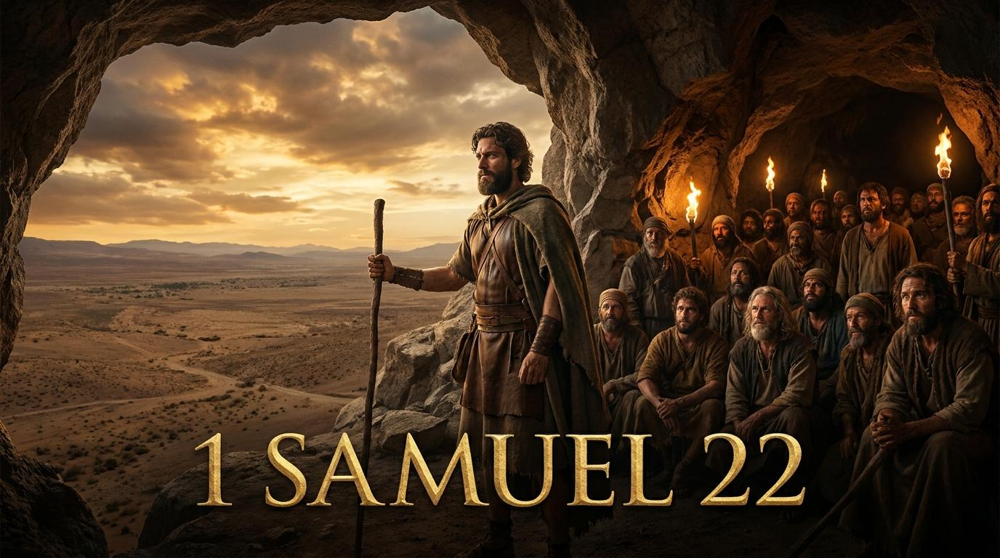

「你可以住在我這裏，不要懼怕。因為尋索你命的就是尋索我命的；你在我這裏可得保全。」
(撒母耳記上 22:23)
親愛的天父，我們感謝祢！在我們生命經歷窘迫、欠債與苦惱如同身處亞杜蘭洞時，祢的愛接納了我們。求祢賜給我們如同大衛般承擔的勇氣，除去我們心中如掃羅般的嫉妒與恐懼。讓我們在祢的裡面找到真正的避難所，並效法基督，成為身旁受傷者的遮蓋與安息。奉主耶穌基督的聖名祈求，阿們。
這反映了神國度的核心法則——恩典。神透過破碎的人來成就偉大的事，正如新約中教會的建立，不是呼召世上尊貴的，而是揀選了世上軟弱的，叫那強壯的羞愧。
日本傳統修復技術，將破碎瓷器以金漆修補，裂痕反而使其更顯珍貴。亞杜蘭洞就是大衛與這群邊緣人的「金繼」之地。
「福音是這樣的：我們比自己敢於相信的更加罪惡和充滿瑕疵；但同時，我們在耶穌基督裡，比自己敢於盼望的更加被愛和被接納。」—— 提摩太·凱勒
掃羅手裡「拿著槍」，這槍是他權力與暴力的象徵。沒有屬靈安全感的權力是極具破壞性的，它會迫使人走向極端，甚至違背神的律法。
歷史上的獨裁者常因內心恐懼而清洗忠誠部下。在群體中若領袖缺乏安全感，容易把建議當作背叛。
「權力的誘惑之所以如此巨大，是因為它提供了一條看似可以取代愛的捷徑。」—— 盧雲
大衛勇敢地承認自己的過失，並承諾保護亞比亞他。這完美地預表了耶穌基督：基督在十字架上承擔了我們的罪債，並宣告在祂裡面的人必保護到底。
在奧斯威辛集中營中代人受死。真正領袖不是把別人推上祭壇，而是自己走向祭壇。
「對於一個罪人來說，除了在十字架的腳下，宇宙中再也沒有其他安全的地方。」—— 司布真
撒上22:1-23：絕境中的避難所：從亞杜蘭洞看屬靈領袖的塑成
弟兄姊妹們，平安！今天我們要看的是一段關於「絕境」與「避難所」的故事。當我們的人生走到走投無路，當社會的壓力、人際的背叛將我們逼到牆角時，我們該往哪裡去？撒母耳記上第22章，向我們展示了兩種截然不同的領袖，以及兩個截然不同的國度。
經文說：「凡受窘迫的、欠債的、心裏苦惱的都聚集到大衛那裏；大衛就作他們的頭目，跟隨他的約約有四百人。」(撒上 22:2)
大衛此時正在逃亡，他失去了軍隊、失去了妻室、失去了宮廷中的地位，獨自躲在亞杜蘭洞。這時，神送給他的軍隊是誰？不是精兵，而是一群「受窘迫、欠債、心裡苦惱」的人。這是何等奇妙的畫面！神的國度從來不是建立在人類的驕傲和強大之上，而是建立在破碎與恩典之中。教會應當就是現代的亞杜蘭洞。我們來這裡，不是因為我們表現得很好，而是因為我們需要一位救主。
與大衛的亞杜蘭洞形成強烈對比的，是掃羅在基比亞的朝廷。掃羅坐在樹下，「手裏拿著槍」。這把槍是他權力與恐懼的象徵。一個失去神同在的領袖，心中充滿了猜疑。他對臣僕大喊：「你們竟都結黨害我！」(撒上 22:8)
掃羅的被害妄想症，讓機會主義者以東人多益抓住了表現的機會。多益出賣了曾幫助大衛的祭司亞希米勒。掃羅聽不進任何解釋，竟然下令屠殺耶和華的祭司！當眾臣僕都不肯動手時，多益毫不留情地殺了85位祭司。掃羅因為失去了在神愛中的安全感，選擇了最殘暴的控制。在我們的生命中，是否也常常緊抓著某種「槍」不放？
大屠殺中，唯一逃出來的祭司亞比亞他來到了大衛這裡。大衛聽聞慘劇後，沒有推卸責任。他說：「你父的全家喪命，都是因我的緣故。」(撒上 22:22)
這是一個真正屬靈領袖的記號——承擔。大衛沒有把錯怪給環境或他人，他為自己當初的謊言付上了悔改的代價。接著，大衛對亞比亞他宣告了這段經文的金句：
「你可以住在我這裏，不要懼怕。因為尋索你命的就是尋索我命的；你在我這裏可得保全。」
弟兄姊妹，這句話不僅是大衛對亞比亞他說的，這更是主耶穌基督在十字架上對你我發出的宣告！當我們被罪惡、撒但和死亡追趕，走投無路時，耶穌對我們說：「住在我這裡，不要懼怕。那尋索你命的，必須先踏過我的屍體。我在十字架上已經為你承擔了所有的咒詛，你在我這裡，絕對安全。」
「福音是這樣的：我們比自己敢於相信的更加罪惡和充滿瑕疵；但同時，我們在耶穌基督裡，比自己敢於盼望的更加被愛和被接納。」
—— 提摩太·凱勒 (Tim Keller) 《為主的理由》
「權力的誘惑之所以如此巨大，是因為它提供了一條看似可以取代愛的捷徑。當我們不確定自己是否被愛時，我們就會想要控制。」
—— 盧雲 (Henri Nouwen) 《奉耶穌的名》
「對於一個罪人來說，除了在十字架的腳下，宇宙中再也沒有其他安全的地方。」
—— 司布真 (Charles Spurgeon) 《清晨與甘露》
「當基督呼召一個人時，祂是吩咐他來死。」
—— 潘霍華 (Dietrich Bonhoeffer) 《做門徒的代價》
「一個完全順服神旨意的人，是絕對安全的。」
—— 陶恕 (A.W. Tozer) 《渴慕神》
「恩典不是反對努力，而是反對賺取。」
—— 魏樂德 (Dallas Willard) 《神聖的約定》
「門徒訓練是在同一個方向上長期的順服。」
—— 畢德生 (Eugene Peterson) 《長弓踏歌》
「我們在十字架前若不能感受到神那不可思議的愛，我們的心就已經麻木了。」
—— 約翰·史托德 (John Stott) 《基督的十字架》
「我們的心是一座製造偶像的工廠，除非神用祂的恩典來改變它。」
—— 約翰·加爾文 (John Calvin) 《基督教要義》
「除了十字架，沒有任何事物可以解開上帝的奧祕。」
—— 馬丁·路德 (Martin Luther) 《海德堡爭辯》
網路資料可能出錯，請小心查證、謹慎使用。